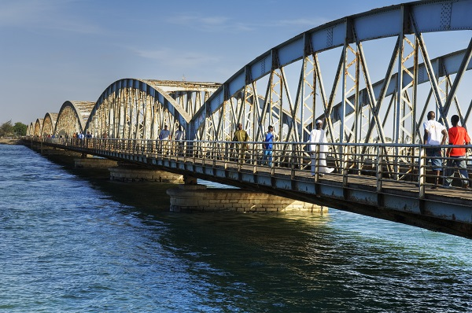

La ville de saint-Louis appelle en wolof Ndar Guett est l une des plus grandes villes du Sénégal et, historiquement, l'une des plus importantes.
elle a été crée en 1659 par les europeens. la ville de saint-Louis est inscrit sur la liste du patrimoine mondial de l'UNESCO comme avec Gorée.
SITUATION GEOGRAPHIQUE
Saint-Louis se trouve à l'embouchure du fleuve Sénégal, à 264 km2 au nord de la capitale du pays, Dakar, près de la frontière avec la Mauritanie.
elle a :
une Altitude de 22 m
une Superficie de 6 770 ha = 67,7 km2

PATRIMOINE ET ARCHITECTURE
Le quartier historique (l'île Saint Louis)15, relié par un pont métallique à sept arches, le pont Faidherbe, aux quartiers de l'île de Sor.


Les réserves ornithologiques du Parc national de la Langue de Barbarie et
du Parc national des oiseaux du Djoud.


LE SPORT A Saint-Louis
Le Stade Mawade Wade, aussi connu sous le nom de Stade de Linguère, est un stade omnisports situé dans le quartier de la Médina de la ville de Saint-Louis, au Sénégal.
Le stade, doté d'une capacité de 1 200 places, est l'enceinte à domicile des clubs de football de l'ASC Linguère et du Saint-Louis FC.